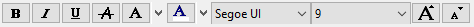
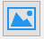

事故の説明を編集する
事故の説明
Here you can shortly descripe the accident. How it happens and more detailed infos about it. ツールボックスからテキストを編集し、テキストのレイアウトを変更することもできます。たとえば、フォントを変更したり、太字などを作ることができます。
事故の日付と時刻
ここでは、事故の日付と時刻を設定できます。
事故の場所
事故発生場所についての追加詳細情報を与えることができます。
画像のリスト
ここでは、追加ボタンをクリックすることで、事故の写真を追加できます。画像を削除することもできます。大きなビューで画像を表示する場合は、ボタンをクリックする必要があります。
会社情報
それは事故を担当する会社についての追加情報を与えることができる。